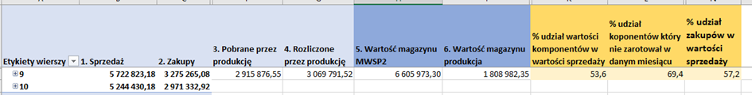

Co dzieje się w zakupach?
- Rekrutacje – Zakupy.
- 20/10 będzie wszystko pod 100 szt. 100 szt wyszło za ok 95,55 PLN (5,6 USD za komponenty + 11,90 USD za Cyperess + 8,05 PLN za montaż) Teraz zakupiliśmy 1900 szt CY8C4127AZI-S455 w cenie 8.10 USD (5,6 USD + 8,10 USD + 8,05 PLN). 6000 szt na przyszły rok wyjdzie za (5,29 USD + 3,4 Cypress od producenta + 8,05 za monataż) Oto FA za pierwsze 100 szt - pierwsza pozycja Slidery - druga pozycja szablon - trzecia pozycja koszty dostawy do nas - czwarta pozycja koszty uruchomienia - ostatnia pozycja to dodatkowe koszty związane ze ściągnięciem towaru (PCB samolot 500 USD; 170 USD inne komponenty) Na przyszłość pozycji 2 4 i 5 nie będzie.
- Forma Soft Touch nie jest ok. Pan Michał Zwierzyński zlecił jej poprawę. Protokół nie został podpisany, ale zlecone zostały na piśmie poprawki. Jutro Pan Michał ponownie sprawdzi formę w PIMET, po czym przyjedzie do nas z podpisanymi protokołami odbioru formy.
- Soft Touch2,0. – mam wyceny. Cena w NORD ok 13,50 USD. Poprosiłam o ofertę na 10 szt próbek. Muszę wykupić komponenty które zamówiłam w marcu w Masters tj:
- Obudowy klosze i zaślepki do pasków led - > SMART próbki powinny byś w tym tygodniu gotowe.
- Zdrożały NITY 3x6 z firmy SCELL-IT z 18,33 na 20,06. 11/10 przyjedzie Pan z Marcopolu aby testować ich nity. Cena Marcopol 15,90 pln. - > niestety nity nie nadają się
- Zbieramy próbki farb. AKZONOBEL farba nie nadaje się ale będzie spotkanie na kótórym porozmawiamy o szczegółach. KABE (w piątek 14/10 było spotkanie) ok cena 19,90 pln ale za bardzo matowa, czekamy na nową próbkę (będzie gotowa w połowie miesiąca).
- Tiger wystawił korekty do ceny na kwotę 1654,35 EUR.
- Mamy problem z przyciskami srebrnymi - > towar utknął u dostawcy w Chinach bo jest tam zamknięta strefa - > COVID. Poza tym zmniejszyliśmy SM licząc że będzie za to duży wzrost zapotrzebowania na przełączniki czarne. Trzeba przełączniki czarne wpiąć do technologii bo ten temat nie został dokończony. Wysłano 4900 szt przycisków srebrnych samolotem - > 385,88 USD koszt transportu powinny byś w tym tygodniu.
- Mamy problem z przełącznikami kołyskowymi do Corony - > towar nie wypłynął o czasie z Chin. Przełączniki będą 25/10.
- Mieliśmy awarię formy - > zleciliśmy jej naprawę - > 1840 PLN netto - > już jest naprawiona
- Wprowadzamy usprawnienie w systemie - > stany minimalne będą się automatem przeliczać każdego 1 dnia miesiąca. W planie mamy uruchomienie pętli ERP aby automatem kreować zapotrzebowania do dostawców. Dodatkowo aby zapobiec pomyłkom w wysyłkach zgłosiliśmy wgranie do systemu przy naszych indeksach indeksy od dostawców.
- Sprawdzamy ceny kartonów czy mamy na odpowiednim poziomie - > mamy ofertę od konkurencji firma ASKartony - > będziemy analizować.
-
Wentelon – sprawdzamy próbki
S8015 copper wire aim at B hoods S8020 copper wire aim at B hoods - Wskaźnik rotacji zapasów – poprawa 34,63 dni - >dzięki wysokiej sprzedaży
- Największe przyjęcia w 41 tygodniu.
- PZ-Przyjęcia zewnętrze robione na bieżąco- brak zaległości.
- WZK-robione na bieżąco, brak zaległości.
- ZWM- dokumenty które są to towar specyfikacje które mają wyjechać dzisiaj.
- PW- Jest parę dokumentów, część towaru przyjmiemy dzisiaj, a część jeszcze do mnie nie zjechała.
- RW- wydawane na bieżąco, brak zaległości.
- MMW- brak zaległości.
- MMP-okapy staramy się przyjmować na bieżąco. Mamy 1 dokument zwrotu z produkcji, dzisiaj go ogarniemy.
- Wydania, realizowane według ustaleń.
- Od 2.11.2022 będzie z nami nowy magazynier. Ma doświadczenie na wysokim składzie.
- W momencie gdy mam trochę czasu robimy inwentaryzację szyb. Regał 42 mam zakończony.
| Kod towaru | Nazwa towaru | Cena | Waluta | Wartość do realizacji |
|---|---|---|---|---|
| STM32G030 | Mainstream Value-Line Arm Cortex-M0+ MCU z 32 KB pamięci Flash, 8 KB RAM, 64 MHz CPU, 2x USART, timerami, ADC, comm. I/F, 2-3,6 V do Soft-Touch | 0,7705 | USD | 3698,40 |
W turbinie 6s wyniki są podobne jak te które deklaruje dostawca. Filip sprawdza też te silniki w turbinie 15SK28, później zamontuję je w okapie, przebada głośność i takie pełne porównanie podamy w raporcie.
Sprzedaż vs magazyn


| Dostawca | Suma z netto |
|---|---|
| FENU2 | 578 898,04 |
| NORDES - NORD ELEKTR | 57 398,80 |
| CONVEX | 47 379,13 |
| WOK | 46 202,90 |
| METAL-IMPORT | 36 962,20 |
| ARCELORMITTAL- SPLIT | 30 786,70 |
| JU-PITER JACEK | 29 921,50 |
| ELMAK | 29 900,00 |
| PIMETZOO | 27 549,27 |
| GAZGROD PLUS | 23 650,00 |
| PROTECH OXYPLAST | 18 925,00 |
| VINPLAS | 16 603,14 |
| MARCOPOL | 11 764,80 |
| TIGER | 11 260,06 |
| TOT ZEMBRZUSKI | 10 526,40 |
| HERBETKO | 10 438,50 |
Kontrola Jakości
Magazyn